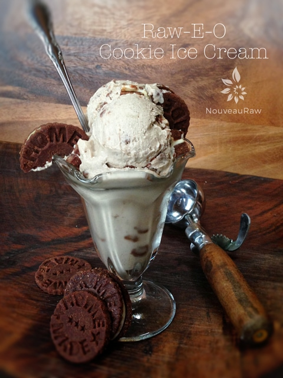
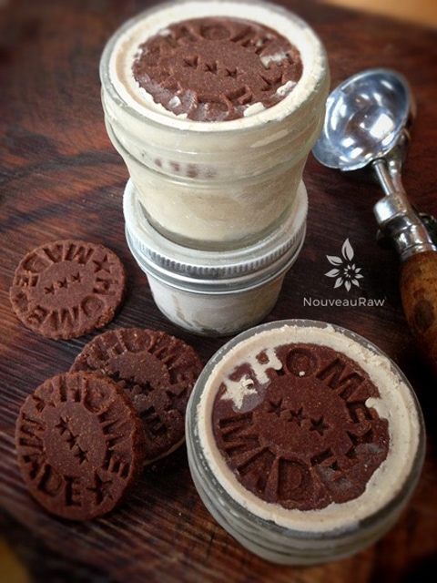

Raw-E-O Cookie Ice Cream
~ raw, vegan, gluten-free ~
This recipe came about as a special request from a young man by the name of Max. He wanted an Oreo Ice Cream and his mom wanted to provide this for him but in a raw, healthier version… so she came to me and asked if I could do just that. And this is the end result. :)
I hope it meets the approval of Max. I did my best to get the textures and flavor as close as possible. Just ask Bob… I made four different batches of just the cookie part, trying to perfect that. He has been eating Raw-E-O Cookies for several weeks. hehe
The striking part of this whole process is the fact that it has been over 10 years since I have even had an Oreo cookie, let alone the ice-cream version. So I was doing my best by going off memory.
At one point, Bob bought some gluten-free “oreo” cookies to see how mine was measuring up. He ate one of those, gave the rest away, and declared mine as waaaaay better. We are unable to taste against side by side with a true Oreo because we don’t eat gluten or any of the other 30+ ingredients that used in making the commercially made cookies.
To make this recipe, you will need to make three components. The cookie dough, which requires dehydrating, the frosting cream for the center of the cookie, and the ice cream. The cookie recipe will make more cookies than what is needed for the ice cream but is that really such a bad thing? :) I made several other cookie recipes while trying to perfect this recipe. I will release those as well. Each one is a little different in the ingredients I use. But the cookie recipe that I posted below is the one that got thumbs up for the my “Oreo” ice cream.
Thank you, Max, for giving me such a fun challenge I hope you enjoy this!
Ingredients:
Yields 1 quart
Ice cream:
- 1 cup cashews, soaked 2 + hours
- 1 1/3 cup raw almond milk
- 1/3 cup maple syrup
- 2 tsp vanilla extract
- 1 squirt liquid stevia, to taste
- 1/8 tsp Himalayan pink salt
- 1/2 cup raisins
- 1 vanilla beans, seeds only
- 2 Tbsp cold-pressed coconut oil
Cookies:
Cream center: yields 2 1/2 cups
- 1 cups cashews, soaked 2+ hours
- 3/4 cups thick coconut milk, fresh or canned
- 1/4 cup maple syrup
- 1 Tbsp vanilla extract
- 1/8 tsp Himalayan pink salt
- 1/2 cup coconut oil, melted
- 1 Tbsp sunflower lecithin powder

Preparation:
Cookies:
- In the food processor, fitted with the “S” blade, pulse together the almond pulp, ground flax, cacao powder, coconut, coconut flour, and salt.
- Add the sweetener, vanilla, and stevia. Pulse together until thick batter forms.
- To roll out the cookies, place the batter in the center of a teflex sheet and cover it with another teflex sheet. Roll out till 1/4 ” thick. Using a circular cookie cutter, cut out as many circles as you can. Transfer the cookies to the mesh sheet that comes with the dehydrator.
- Gather the dough scraps and repeat the rolling out process to continue to make cookies, until all the batter is used up.
- Dehydrate at 115 degrees (F) for 10-16 hours or until dry. The time frame will depend on the humidity, your machine, and how full it is.
- Once done dehydrating, allow to cool to room temperature before frosting.
Frosting:
- Place the cashews in a glass bowl, along with 3 cups of water.
- Soak for at least 2 hours.
- The soaking process will help reduce phytic acid, which will aid in digestion.
- The soaking also softens the cashews, so they blend nice and creamy.
- After the cashews are through soaking, drain, and rinse.
- In a high-speed blender combine in order; coconut milk, maple syrup, vanilla, salt, and cashews.
- By placing the liquids in first, it helps the blades spin more easily.
- Blend until creamy, and you don’t feel any grit in the frosting.
- Depending on the blender, this may take anywhere from 1-5 minutes.
- While the blender is running and a vortex is in motion, drizzle in the coconut oil. Make sure that it gets well incorporated.
- Add the lecithin and process just until mixed in.
- Place the frosting in an airtight container and place in the fridge for 2-4 hours to firm. I tend to put mine immediately into my piping bag (placing a piece of tape on the piping tip, so it doesn’t ooze out).
- Then when I am ready to pipe the frosting onto the cookies, I just take it out and let it sit at room temp for about 15-30 minutes to soften just a bit.
- If the frosting gets too soft, just place it back in the fridge till it firms up some.
- This will keep for 3-5 days.
Ice Cream:
- Place the cashews in a glass bowl, along with 3 cups of water.
- Soak for at least 2 hours.
- The soaking process will help reduce phytic acid, which will aid in digestion.
- The soaking also softens the cashews, so they blend nice and creamy.
- After the cashews are through soaking, drain, and rinse.
- In a high-powered blender add; cashews, almond milk, sweetener, vanilla, stevia, salt, and raisins. Blend until it is smooth and creamy.
- Due to the volume and the creamy texture that we are going after, it is important to use a high-powered blender. It could be too taxing on a lower-end model.
- Blend until the filling is creamy smooth. You shouldn’t detect any grit. If you do, keep blending.
- This process can take 2-4 minutes, depending on the strength of the blender. Keep your hand cupped around the base of the blender carafe to feel for warmth. If the batter is getting too warm. Stop the machine and let it cool. Then proceed once cooled.
- Then add the vanilla bean seeds and the coconut oil. Blend until incorporated.
- Pour the ice cream batter into the ice cream machine and follow your manufacturer’s instructions.
Assembly:
- Place the cookies in the freezer to harden before adding them into the ice cream. This will prevent them from crumbling and falling apart when stirring them into the ice cream.
- Once the cookies are hard, remove them from the freezer and cut them into bites sized pieces. This recipe makes more cookies than what will be needed for the ice cream. Put in as many or as little as you want.
- Make the ice cream. When it is done in the ice cream machine (still soft-serve consistency) add the cookie chunks and stir together.
- Place in freezer-proof containers and freeze. You can eat it right away or freeze it to harden.
- If your ice cream is in solid form, let it rest on the countertop for 15 +/- minutes to soften a bit for pleasurable eating. :)
Freezing Suggestions for Ice Cream:
-
Use an ice cream machine. Follow the manufactures directions.
-
Freeze in popsicle molds or 3 oz Dixie cups with a popsicle stick inserted.
-
-
Store the ice cream in the very back of the freezer, as far away from the door as possible. Every time you open your freezer door you let in warm air. Keeping ice cream way in the back and storing it beneath other frozen-sold items will help protect it from those steamy incursions.
-
Ice cream is full of fat, and even when frozen, fat has a way of soaking up flavors from the air around it—including those in your freezer. To keep your ice cream from taking on the odors, use a container with a tight-fitting lid. For extra security, place a layer of plastic wrap between your ice cream and the lid.
-
To soften in the refrigerator, transfer ice cream from the freezer to the refrigerator 20-30 minutes before using. Or let it stand at room temperature for 10-15 minutes.
-
Wish to make your own raw ice cream, wonder what machine I might recommend, and more? Click (
here) to check out the Reference Library!

There are so many fun ways to serve ice cream. Below, I filled some 1/2 pint,
freezer-safe jars with today’s treat. I then pressed a whole cookie on top.
These jars are perfect for single servings! No extra dirty dishes when it comes
to serving up your favorite ice cream with others, or yourself. :)
© AmieSue.com